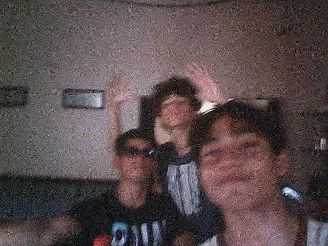

友達の写真

アポヨ湖の動画
こんにちは！ このビログのつもりは宿題です。旅行を調べ見よう
私はニカラグア人ですから、ニカラグアに行きたいです。
友達に会いつもりです。
初めにフィラデルフィアからマナグアまで飛行機で行って、
そのあとにバスでマサヤに行きます、マサヤの近くはアポヨ湖がありますあそこにパーティーをします。
アポヨ湖は私の一番好きな
湖、火山湖ですから。それから友達の
家で遊んでとのんびりします。友達の家族はすごく
優しいです学校時に時々そこでのんびりした。マサヤはたくさん
思い出がある。
もしかしたら皆さんはお土産をあげるかもしれません。
行きたい場所がたくさんありますよ。ソモト渓谷とか、
オメテペ島とか、黒い森にも行きたいです。
でも、あそこに行くのは高いです。
二週間の旅行は、最低でも３０００ドルぐらいかかると
思います。でも大丈夫です。いつか行きたいです。

友達の写真
アポヨ湖の動画